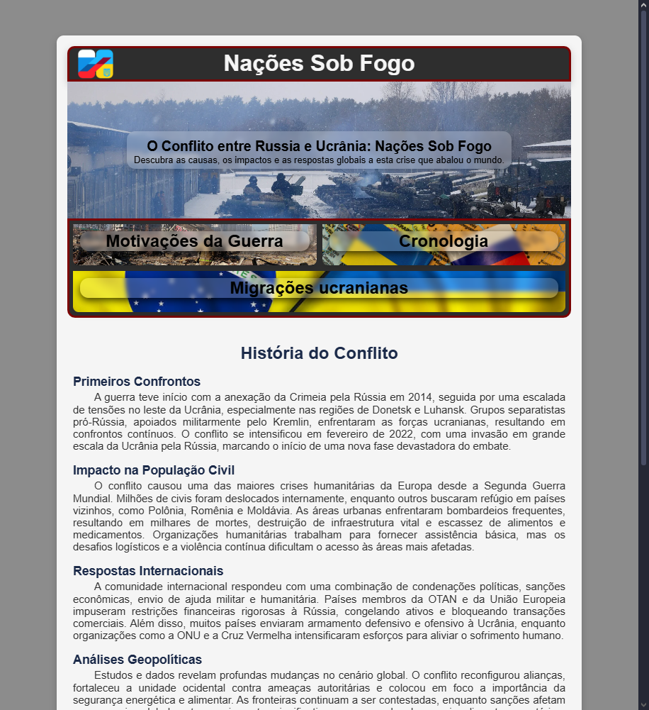

Arthur Macaúbas
Desafie o limite, redesenhe o impossível
Conheça MaisProjetos em Destaque
-

Nações Sob Fogo
Um site criativo que explora HTML e CSS de forma prática.
Ver Projeto -

Jogo de Memória
Um jogo interativo desenvolvido com Arduino no Tinkercad.
Indisponível